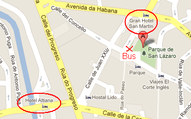

La boda tendrá lugar en el Pazo de San Damián, en el municipio de Amoeiro, Ourense, el sábado 21 de Julio del 2012.
La ceremonia civil comenzará a las 19:00. El cóctel y el banquete que tendrán lugar a continuación se celebrarán en el mismo sitio.
Hemos reservado para todos los invitados que lo deseen en 2 hoteles para la noche del sábado.

Ambos hoteles están situados cerca del centro de la ciudad. Se podrá disponer de un parking público cerca de los hoteles.
Para hacer efectiva la reserva, nos tenéis que comunicar en qué hotel os queréis alojar y si estáis interesados en más de una noche, ya que hemos acordado con los hoteles realizar las reservas a través de nosotros para mayor comodidad.
Cómo llegar a Ourense en coche
Tomad la A-6 en dirección A Coruña. En Benavante tomad la salida por la A-52 con dirección Ourense/Vigo. Llegando a Ourense tomad la salida 228 con dirección Ourense Centro.
Cómo llegar a Ourense en transporte público
La empresa de autobuses que va a Ourense es Avanzabus con salida desde Méndez-Álvaro. El mismo día de la boda, tenéis opción de coger dos autobuses, uno a las 08h00 y otro a las 10h00.
En RENFE, los trenes con trayecto Madrid-Ourense tiene el siguiente horario:
- 14:30 => 19:50
- 22.30 => 05:10
Por lo que en caso de ir en tren habría que viajar el día anterior y reservar una noche más en el hotel.
Cómo llegar de Ourense al Pazo
Habrá un servicio de bus para nuestra boda, que saldrá del centro de Ourense a las 18:00. Para el regreso habrá dos horarios, uno después de la cena, en torno a la 01h, y otro para los más valientes en torno a las 05h.
Para los que quieran in en coche
El Pazo se encuentra a 20 km (unos 30 minutos) del centro de Ourense. Para llegar a él hay que tomar la carretera de Santiago/N-525. A la altura de Tamallancos ya está indicado el Pazo siguiendo la carretera OU-0524.


Cómo llegar a Ourense en coche
Tomad la A-6 en dirección A Coruña. En Benavante tomad la salida por la A-52 con dirección Ourense/Vigo. Llegando a Ourense tomad la salida 228 con dirección Ourense Centro.
Ver mapa más grande
Cómo llegar a Ourense en transporte público
La empresa de autobuses que va a Ourense es Avanzabus con salida desde Méndez-Álvaro. El mismo día de la boda, tenéis opción de coger dos autobuses, uno a las 08h00 y otro a las 10h00.
En RENFE, los trenes con trayecto Madrid-Ourense tiene el siguiente horario:
- 14:30 => 19:50
- 22.30 => 05:10
Por lo que en caso de ir en tren habría que viajar el día anterior y reservar una noche más en el hotel.Cómo llegar de Ourense al Pazo
Habrá un servicio de bus para nuestra boda, que saldrá del centro de Ourense a las 18:00. Para el regreso habrá dos horarios, uno después de la cena, en torno a la 01h, y otro para los más valientes en torno a las 05h.
El Pazo se encuentra a 20 km (unos 30 minutos) del centro de Ourense. Para llegar a él hay que tomar la carretera de Santiago/N-525. A la altura de Tamallancos ya está indicado el Pazo siguiendo la carretera OU-0524.
Ver mapa más grande